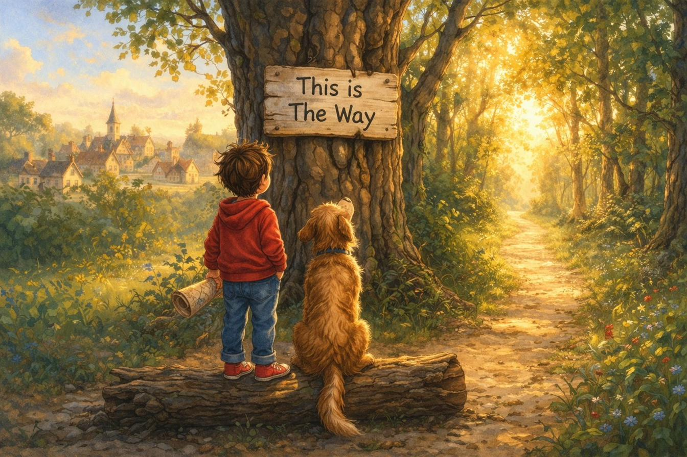
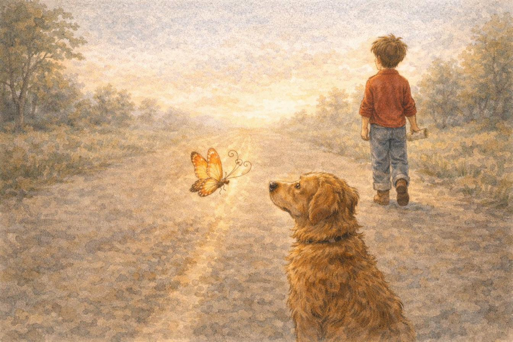

Boy had a map, with a straight red line drawn from Here to There.
Dog had a nose that could smell everything between.
Here is a place where everyone starts.
Filled with the normal pieces and parts. It has all the same things that Everywhere has — houses and horses and boxes and bags.
At the end of its edge there's a path in the wood, worn smooth by the feet of all who have stood.
At the start of the path there are words on a tree — "This is The Way," the simple sign reads.
At the base of the tree standing tall on a log are a Boy named Boy and a Dog named Dog.
On The Way in The Middle a secret to share, for nobody from Here has made it to There.
Boy had a map, with a straight red line drawn from Here to There. Dog had a nose that could smell everything between. That was enough.
Boy lifted his foot. Dog lifted his nose. And together, they took the very first step onto The Way.
The Way was just a road, flat and straight and easy — the kind of road that goes exactly where it says it goes. Their journey was a journey, flat and straight and easy. The kind of journey that goes exactly where it's meant to go.
They came upon a sign. It read:
YOU ARE HERE.
THERE: STRAIGHT AHEAD.
A butterfly passed them with upside down wings and whiskers that circled in halo like rings. Boy did not notice. Dog did. He stopped. Sniffed the familiar wind it left behind. Then walked on.
Boy looked at his map and nodded. Dog sniffed the post. The Way stretched out before them.
The Way went on. And on. And on some more. Past ordinary trees. Past ordinary smells. Past a rather ordinary squirrel who had nothing to say about anything.
And then, suddenly, there was an UNordinary man. He stood in the middle of The Way as if he had always been standing there, which, as it turned out, he had. He was a middlesized man in a middlesized hat, with a middlesized smile that didn't quite reach either end.
"I," he said in a middlesized voice, "am the Middle Man."
Boy looked from his map to the Man. Dog sniffed the air in his direction. Neither of them blinked.
"I know what you're thinking," the Middle Man said.
"The very same question that I've come to dread.
Are you There yet? It's what they all say.
I'll give you the answer I give everyday."
"You're finally here and halfway there,
halfway from halfways everywhere.
Except from where you've halfway come,
from there, you're squarely halfway done."
The Middle Man stepped to the side and motioned for Boy and Dog to pass along The Way. A sign appeared before them that read:
HALFWAY TO THERE.
Boy looked at his map and nodded. Dog sniffed the post. The Middle Man must have wandered off. The Way stretched out before them.
The Way went on. And on. And on some more. Past less ordinary trees. Past less ordinary smells. Past a rather UNordinary squirrel who had something to say they couldn't understand.
In fact, everything along The Way was getting harder to understand. The shadows were both in front of and behind them. The wind blew both left and right. And the sun was shining from below them and above them.
Signs were appearing faster now too.
THERE: CLOSER THAN BEFORE BUT NOT AS CLOSE AS YOU'D LIKE
THERE: YES.
HERE: ALSO YES.
HALFWAY: DEFINITELY.
CAUTION: MIDDLE AHEAD AND BEHIND.
Boy and Dog leaned on the sign. Boy opened his map. The straight red line from Here to There was now less of a line and more a squiggly noodle. Dog sniffed the air, his nose twisting curiously.
The Middle Man was suddenly there too, his back leaning on the other side of the sign.
"I," he said in a middlesized voice, "am the Middle Man."
Boy and Dog turned to look at him. They still didn't blink.
"You've made it this far, a boy and his pet,
But this is as far as anyone gets.
Stuck in the middle isn't so bad,
Even if sometimes I feel a bit sad.
I've been here much longer than anyone knows,
In this middlesized place in these middlesized clothes.
I started just like you, a boy and his dog,
Standing at Here on that starting line log.
But your question is clear so I'll tell you again,
Are you There yet?"
"You're finally here and halfway there,
halfway from halfways everywhere.
Except from where you've halfway come,
from there, you're squarely halfway done."
The Middle Man stepped to the side but did not motion for Boy and Dog to pass along. Instead, he pointed to a sign that read:
WARNING: HALFWAYS AHEAD.
PLEASE PROCEED CAREFULLY.
OR DON'T.
IT WON'T MATTER.
Boy looked at his map and nodded. Dog sniffed the post. The Middle Man faded away. The Way twisted and branched before them.

Dog caught the faint smell of the butterfly with upside down wings
and whiskers that circled in halo like rings.
The Way went on. And on. Or did it? It no longer passed trees or smells. There were no squirrels anywhere to be found. This was The Way of The Middle.
The Middle was not dark. The Middle was not bright. It was not loud. It was not quiet. It was not wrong exactly. But it was not right.
Everything in The Middle was almost. Almost a color. Almost a sound. Almost a smell that Dog couldn't quite catch, no matter how hard he tried.
YOU ARE SOMEWHERE.
Boy sat down. Dog sat down beside him. For the first time on The Way, they didn't feel like going anywhere at all. The Middle was very good at that. Making you forget there was anywhere else to be.
Boy looked at his map. There was no line anymore. Just a dot. Right in the middle of everything. Which was also the middle of nothing.
A familiar voice spoke out.
"I wasn't always the Middle Man,
I started off with a dog and a plan,
But plans have a way of getting lost
And getting to There wasn't worth all the cost
So I stayed in The Middle, and I've waited each day
For someone like you to come somewhere this way."
"Stay," said the Middle Man, "stay here with me."
But before he could retreat back into his middlesized words, Dog caught the faint smell of the butterfly with upside down wings and whiskers that circled in halo like rings. He nudged Boy's palm with his snout.
Boy looked at the Middle Man and blinked. Dog also looked at him and blinked. The Middle Man had never been blinked at before.
Boy took a step forward on The Way, then reached back and offered his hand to the Middle Man.
There they stood in the very middle of the Middle. Almost wanting to stay and almost wanting to leave. Both ready and not.
The Middle Man took Boy's outstretched hand. For the first time, his middlesized hand looked large compared to the boy's small fingers.
Quietly, Boy spoke:
"You're finally here and halfway there,
halfway from halfways everywhere.
Except from where you've halfway come,
from there, you're squarely halfway done."
The Middle Man closed his eyes. When he opened them, Almost was gone.
The boy put away his map. Dog sniffed The Way before them. And for the first time in a very long time, the Middle Man took off his middlesized hat and took a not so middlesized step forward.
The Way went on. And on. And on some more. The Way was flat again. And straight. But not the same flat and straight as before. This was a flat and straight that knew where it was going, and was now wide enough for the three of them who were determined to get to There. The Middle was behind them now.
Everything moved in the same direction. The butterfly with upside down wings and whiskers that circle in halo like rings flew above them. The shadows stretched behind them. The wind blew right before them. The sun, that was just ahead of them, shone brightly over There.
A sign appeared that read:
NEARLY THERE
Boy, Dog and the Middle Man did not stop at the sign. They could see There in the distance, closer than anybody had ever been before.
The Way stretched out before them.
The End